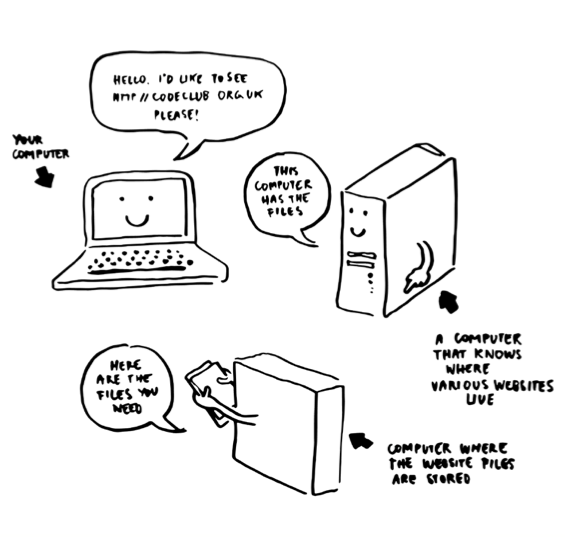

Introduction
Have you ever wondered how the world wide web works? Of course you have! Today you will learn how to make websites so you too can contribute to building it. Websites are written using HTML, which stands for HyperText Markup Language. You will find out more about it as you build your page.
Step 1: What are web pages?
Activity Checklist
- Open a text editor.
- Create a new document.
- Write something! For example:
Hello! My name is … - Save the file. Call it
hello.txt. - Now find the file and open it again. It opens up in a text editor, which is not that much fun.
- Change the extension (the bit after the dot) to
.html, so now the file is calledhello.html. - Open the file again.
What program was used to open the file this time? The web browser is a special program that knows how to interpret text files written using HTML language. We haven’t added any HTML yet, we simply put in some text, but the browser doesn’t care! As long as you give it an .html file, it will do its best to show you the file as best as it can understand it.
This is very useful: even when a website contains errors, the browser will try to figure out how to show it to you anyway.
How can we view these files?
When you type in the address in your browser, your request gets passed along to a computer which is always turned on and configured to allow you to see the pages that live inside it. This computer is called a server. When it receives a request from your computer, it looks for all the necessary files, like the .html file, and sends you that with anything else that the page needs, like images and videos.
Can I have this page please?
 Here you go.
Step 2: What is HTML?
HTML is a markup language - it means that it is used to describe what things are.
Even though the browser will try to display things as best as it can, it helps it to know what these things are.
To tell the browser that, we use tags.
Tags look like this: <p>This is some text.</p>
<p> is short for paragraph.
There is an opening tag, like this: <p>, and a matching closing one with a forward slash: </p>. The browser knows that anything in between the two tags is a paragraph of text.
Tags can have attributes, which are bits of useful information about the element. Let’s have a look at the link tag:
<a href="http://codeclub.org.uk">Visit CodeClub website</a>
<a> stands for anchor, which is what links used to be called.
It also has the opening tag: <a> and the closing tag: </a> but we added an attribute to the opening one: <a href="http://codeclub.org.uk">
href is the attribute, and http://codeclub.org.uk is its value. href stands for hypertext reference. A text that linked to other texts was once named hypertext, because it could have images, and sounds, and could link to other texts. That made it a little bit different to plain text. href tells the browser where the link should take you to, and the text in between the tags will be visible as a link.
Activity Checklist
- Open the
page.htmlfile. - Ask the volunteer whether you can use X-Ray Goggles or developer tools to look at the code (a developer is someone who makes things with code).
If you can use X-Ray Goggles:
- Click on the X-Ray Goggles bookmarklet.
- Move your mouse around the page. You can see the parts of the page light up, and see what tags they are made of. You can click on each box to see the snippet of code the box is made of.
If you are using developer tools:
- Move around the page. Right click anything interesting, and then click
Inspect element. A panel will open up which will show you the page’s code at the same time as the page. - Move your mouse over different pieces of code. The corresponding things on the page will be highlighted, so you can see which bit does what.
- Try to inspect all parts of the page. Can you figure out what the different tag names stand for?
We already know <p> and <a>.
<ol> - ordered list <ul> - unordered list <li> - list item <h1>, <h2>, <h3>, <h4>, <h5>, <h6> - headings <hr> - horizontal rule <div> - a box for grouping things <img> - a special element, which unlike others doesn’t have a closing tag. We use it for putting the images in.
There are also some tags that we will always use in HTML documents, and they are:
<html> - tells the browser where we put our code <head> - inside <head> we put things which may be useful to the browser, but which don’t appear as text on the page. In this example we put a <title> there, which then shows up at the top of the browser window. <body> - that’s where we put the things we want to appear on the page
Activity Checklist
- Notice how tags can nest within one another. We have the
<a>tag, which is inside a<p>tag, which in turn is inside<div>, which is placed inside<body>. Whenever this happens, we say that the tag that is being wrapped is the child and the tag that does the wrapping is the parent element. It’s a little bit like a family tree! - To the browser all tags of the same kind are the same, but you can mark them out using classes and Ids (pronounced aye-dees). For example, some of your paragraphs might be introductions, so you could give them a class
introduction. See if you can spot some classes insidepage.html. - Ids are used to mark unique items on your page. See if you can spot the
divtag with anidofkittenin the page. - What will happen if you move things around? Let’s go back to the code editor. Find an
<ol>tag in the code and select it with all its got inside, like so:
<ol>
<li>Kittens</li>
<li>Cake</li>
<li>Lie-ins</li>
<li>Playing games</li>
</ol>Now copy it and move it somewhere else. Save the page and refresh it in the browser. How does the order of your code affect the order in which things are displayed in the browser?
Things to try
- Create your own paragraph of text.
- Make a link that points to another part of the page (hint: it is something to do with id - look out for a link that takes you to the kitten).
- Add your own headings where you think they might be useful. What happens if you change the heading numbers, for example from
<h3>to<h4>? - What would you have to do to link to a different page?
- If you are using developer tools, once you bring up the panel with the code try double-clicking on the code that looks interesting. See if you can change it. Now you get a live preview without having to move between the browser and the code editor. Cool, huh? Now refresh the page. What happened? When you edit code like this it doesn’t get saved, so you can preview what would happen if you did, but don’t mess up your file, so you can experiment lots and always go back.